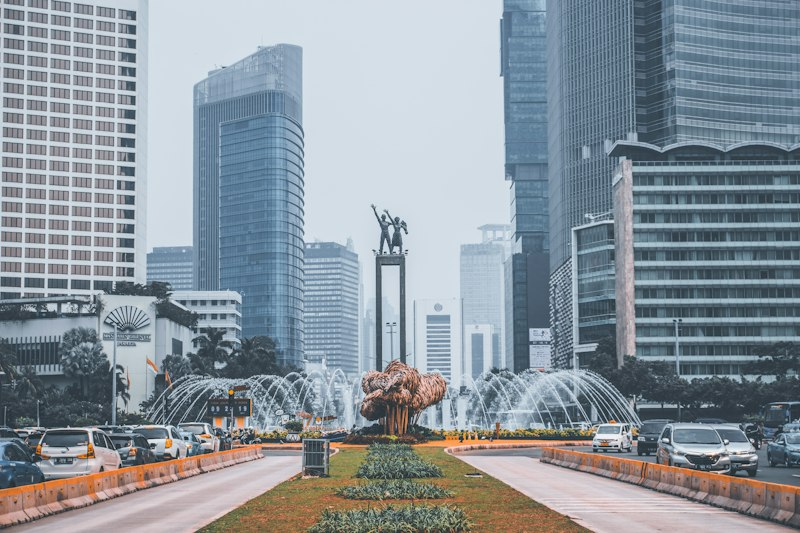
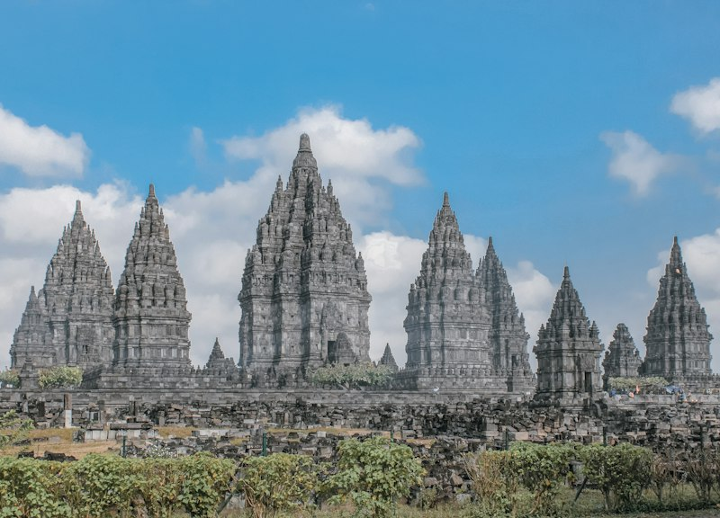
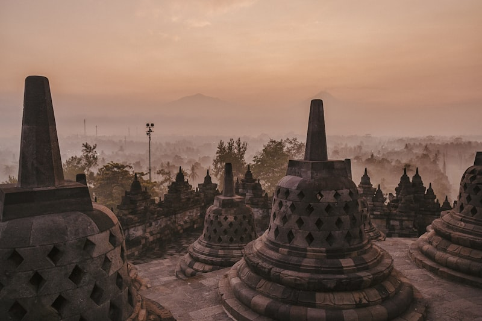
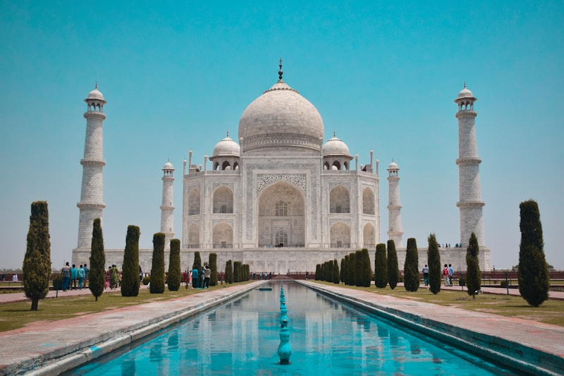

Explore the Wonders of Jakarta City
From monumental independence towers to centuries-old colonial squares, cultural archipelago parks, and seaside leisure havens — here are the five unmissable destinations in my hometown.

Historic HeritageMonumen Nasional (Monas)
Central Jakarta • Symbol of Independence
A 132-meter grand marble obelisk topped with a 14.5m bronze flame layered in 50 kg of pure gold. Offers panoramic 360-degree city views and an underground diorama museum of Indonesian history.

Historic HeritageKota Tua & Museum Fatahillah
West Jakarta • 17th Century Batavia
The historical epicenter of Dutch Batavia. Stroll across the cobblestone plaza, rent colorful vintage Onthel bicycles with wide-brimmed hats, and explore colonial-era museums and Cafe Batavia.

Culture & ArtsTaman Mini Indonesia Indah (TMII)
East Jakarta • Indonesian Cultural Sanctuary
A 150-hectare cultural park showcasing authentic traditional houses (anjungan) from all 38 Indonesian provinces, an archipelago miniature lake, cable car transit, and contemporary green botanical gardens.
 Recreation
Recreation
Taman Impian Jaya Ancol
North Jakarta • Coastal Entertainment Resort
Jakarta's premier coastal amusement hub along Jakarta Bay. Features Dunia Fantasi (Dufan) theme park, Sea World oceanic tunnel aquarium, Atlantis Water Adventures, Marina pier, and breezy beachside promenades.

Harmony ArchitectureMasjid Istiqlal & Gereja Katedral
Central Jakarta • Symbol of Interfaith Harmony
Standing directly facing one another in the heart of Jakarta, the largest mosque in Southeast Asia and the majestic neo-gothic Catholic Cathedral are linked beneath by the subterranean "Tunnel of Friendship" (Terowongan Silaturahmi), representing Indonesia's unity in diversity.
Ancol Bayfront Guide
Top Attractions:
Dunia Fantasi (Dufan) for rollercoasters and Halilintar rides; Sea World for 35,000+ marine creatures; and Symphonie of The Sea beach promenade for sunset dining along the coast of Java Sea.
Getting There:
TransJakarta Corridor 5 (Kampung Melayu - Ancol) or Commuter Line Pink Line to Stasiun Ancol.